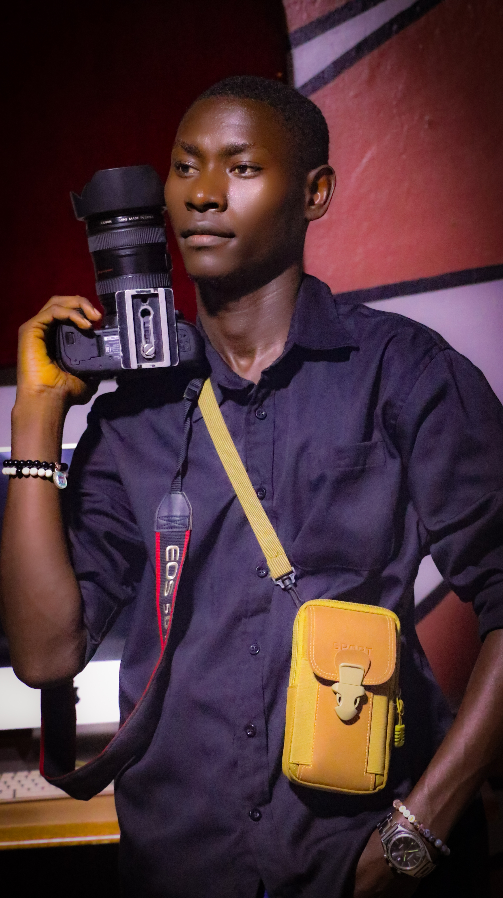

A / 01
Visual storytelling
Make the message impossible to scroll past.
Independent creative studio Kampala, Uganda
Photography, brand design and digital experiences built to make people stop, look and remember.

A creative studio with one foot in visual storytelling and the other in digital craft.
Founded by Andrew in Kampala, Focal Forge brings creative production, design and technology into the same room. Our perspective is Ugandan. Our curiosity has no borders. And the details always matter.
Have something in mind? ↗Make people feel something real.
Ask better questions. Find new angles.
Good ideas deserve good execution.
From the first spark to the final detail, we bring the right mix of creative instinct and technical thinking to each project.
A growing archive of visual experiments, collaborations and things made with care. More stories are on the way.
We only publish the work we can stand behind. Approved case studies and collaborations will be added as they're ready.
A SMALL STUDIO. A WIDE LENS.
We listen before we make. We keep the process collaborative. We care about the tiny things because they're usually what make the big things work.
Understand the challenge, the people and what success should actually look like.
Turn the loose idea into a clear creative or technical plan.
Build, test, refine and sweat the details together.
Deliver work that's considered, useful and ready to do its job.
Tell us the idea, the problem or the half-formed thought. We'll figure out what it could become.